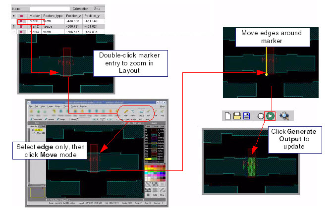
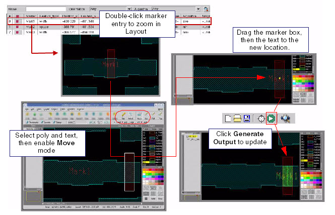

The marker position
and size can be adjusted by the drag method in the layout window.
This is an alternative to directly editing the marker properties
in the Sites table. More care is required here to maintain the text
object within the marker shape. Layout changes will not reflect
in the Sites table until after generating CMi output. Generally, the
other methods are preferred.
Prerequisites
Before starting this procedure,
you should have the following:
Procedure
- Select the desired marker
by either area selection of both the shape and the text, or individual
selection of the object or edge. Some useful options include:
Selecting Individual object
or edge selection with a left-mouse-button click.
Adding or removing incrementally
from the selection using Ctrl-click.
Selecting an area with
a left-drag, followed by pressing Alt-S.
Unselect using the u key.
Enabling the desired objects
for editing with the Layout View buttons: Polygon, Path, Text, or Edge.
Restricting the visibility
of layers can help to select the correct object. Double-click a
layer in the Layers palette to toggle the visibility. Layer visibility
can be stored in the layerprops file, which is re-applied automatically
during CMi output generation. For example, it is suggested to make
the Measurement layer invisible to facilitate editing the marker.
- Move or stretch the marker
shape, as required, with the m key.
Objects can be deleted with the Delete key.
- The marker name text must
be maintained within the marker shape, and on the marker layer.
The name can be adjusted by editing the text properties. If the name
is not kept inside the marker, it will receive a new name (“noname_x”)
during output generation.
- Click Generate Output to update the table,
validate, and create the output files. Before generating CMi output,
the table will not be consistent with the drag method edits.
- This method is illustrated
in Figure 1 and Figure 2.
Figure 1. Adjusting Marker Size
(Drag Method)
Figure 2. Moving a Marker (Drag Method)